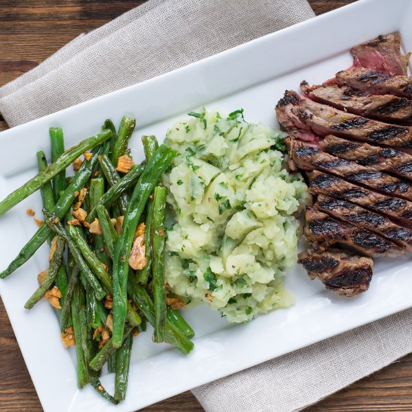

Lemon Pepper Steak with Mashed Potatoes & Green Beans

Total Time
45 min
Nutrition (Per Serving)
838.8 kcalCalories
40.2 gProtein
50.4 gCarbs
55.8 gFat
Full nutrition table
| Calories | 838.8 kcal |
| Total fat | 55.8 g |
| Saturated fat | 28.1 g |
| Trans fat | 2.1 g |
| Cholesterol | 115.7 mg |
| Sodium | 158.5 mg |
| Carbohydrates | 50.4 g |
| Fiber | 10.6 g |
| Sugars | 8.6 g |
| Protein | 40.2 g |
| Potassium | 1780.1 mg |
| Calcium | 133.7 mg |
| Iron | 7.3 mg |
| Vitamin A | 1221.9 IU |
| Vitamin C | 66.7 mg |
| Vitamin D | 10.2 IU |
Cookware
Ingredients
- 8 fl ozchicken or vegetable broth
- 8 clovesgarlic
- 1 ½ lbgreen beans
- 1 small bunchItalian (flat-leaf) parsley
- 1lemon
- 1 ½ lbribeye steak
- 4 mediumyellow potatoes
- black pepper
- crushed red pepper
- extra virgin olive oil
- oregano, dried
- salt
- virgin coconut oil
Steps
- Fill a medium saucepan halfway with water, cover, and bring to a boil.about 7 cups water
- Wash, peel, and large dice potatoes; add to saucepan. Once boiling, cook until potatoes are tender, 10-12 minutes.4 medium yellow potatoes
- Peel and mince garlic. Grate 2 tsp of lemon zest. In a medium bowl, prepare marinade by mixing together ¼ of the garlic (save the rest for the green beans), lemon zest, lemon juice, oil, oregano, pepper, and salt.8 cloves garlic
1 lemon
2 tbsp extra virgin olive oil
½ tsp oregano
½ tsp black pepper
¼ tsp salt - Place steak in bowl and coat with marinade.1 ½ lb ribeye steak
- Wash green beans and trim ends.1 ½ lb green beans
- Heat a grill pan, outdoor grill, or skillet over medium-high heat.
- Coat grill or bottom of skillet with oil. Add steak and cook until desired doneness, 2-5 minutes per side. Transfer to a plate and loosely cover with foil.about 1 tbsp virgin coconut oil
- Heat a sauté pan over medium heat and add coconut oil. Add remaining garlic and crushed red pepper. Cook until fragrant, 15-30 seconds.about 1 tbsp virgin coconut oil
¼ tsp crushed red pepper - Add green beans to the sauté pan and, stirring occasionally, cook until tender crisp, 5-7 minutes.
- Wash and dry parsley. Shave leaves off the stems; discard the stems and mince the leaves.1 small bunch Italian (flat-leaf) parsley
- Drain potatoes and return back to saucepan. Add parsley, chicken broth, oil, salt, and pepper. Mash until smooth.8 fl oz (1 cup) chicken or vegetable broth
2 tbsp virgin coconut oil
½ tsp salt
¼ tsp black pepper - Remove beans from heat. Season with salt and pepper; toss to coat.¼ tsp salt
¼ tsp black pepper - To serve, arrange steak, mashed potatoes and green beans on a plate. Enjoy!